EmuBuddy
User’s Guide

An Apple IIgs for macOS, Windows and Linux
EmuBuddy
User’s Guide
An Apple IIgs for macOS, Windows and Linux
EmuBuddy User’s Guide
For EmuBuddy 1.1
© 2026 Walter Tengler. EmuBuddy is free software under the GNU General Public License, version 3. You may copy this guide and give it away, whole and unchanged.
EmuBuddy is built on KEGS, the Apple IIgs emulator by Kent Dickey, through GSplus by Dagen Brock, which brought KEGS to SDL. The ImageWriter II emulation comes from the GSport and GSplus line of emulators, and AppleTalk follows the LocalTalk support Peter Neubauer wrote for GSport. The font of EmuBuddy’s menus and windows is Shaston 640 by Kreative Software. EmuBuddy uses SDL for its window, input and sound, and libslirp for its network. Ghostscript and FFmpeg are separate programs under their own licenses; EmuBuddy only calls them when you ask for PostScript printing or a video recording.
EmuBuddy is an independent program. It is not made, sold or endorsed by Apple Inc., and it does not contain the Apple IIgs ROM. Apple, Apple IIgs, GS/OS, ProDOS, ImageWriter, Macintosh and macOS are trademarks of Apple Inc. Windows is a trademark of Microsoft Corporation. Linux is a trademark of Linus Torvalds. Other names are trademarks of their owners.
This guide is set in Apple Garamond, as Apple’s own guides of the time were. The screen pictures were taken from EmuBuddy running Apple’s System 6.0.4.
The homepage: portwally.github.io/EmuBuddy
Preface
EmuBuddy is an Apple IIgs in a window on your computer. It runs the programs an Apple IIgs runs, from the disks an Apple IIgs uses, and you work it with the mouse: menus, windows, and dragging and dropping, with no commands to type and no settings file to edit.
Around the IIgs itself EmuBuddy adds what a IIgs on your desk would need: disk drives you fill by dropping a disk on them, a folder the IIgs shares with your computer, a printer whose pages become PDF files, and a network card that reaches the Internet.
This guide shows you how to use all of it. Chapter 1 gets EmuBuddy running; read it first. Chapters 2 to 8 each take one part of EmuBuddy, so you can read them as you need them. Chapter 9 covers EmuBuddy Launcher, the second program in the download, which keeps your games and set-ups on a shelf. Chapter 10 is for those who like to start programs from the command line. The appendixes list every key, tell you where EmuBuddy keeps its files, and help when something does not work.
You should know how to use your own computer: how to download a file, open a folder and drag a file with the mouse. It helps to know the Apple IIgs and its system software, System 6, but you do not need to: if you can choose from a menu and double-click an icon, you can use it.
Keys you press are shown like this: F2, Return, Esc. When two keys are joined by a hyphen, as in Shift-F10, hold down the first while you press the second.
Menu commands are named with their menu: “choose Slots from the Machine menu.” Things you type exactly as they are shown, and the names of files, look like this: emubuddy.config.
Two menu bars appear in this guide, and it matters which is which. EmuBuddy’s menus are File, Edit, Disks, Machine, Speed, View and Help. The menus inside the IIgs screen, such as the Finder’s File, Edit and Special, belong to the Apple IIgs.
On Windows and Linux, EmuBuddy draws its menu bar at the top of its own window, dark, so that you cannot mistake it for the white menu bar of the IIgs below it. The pictures in this guide show it that way. On a Mac the same menus are where a Mac’s menus always are, in the menu bar at the top of the screen, and About EmuBuddy and Quit EmuBuddy are in the EmuBuddy menu there. Everything else looks the same on all three.
Chapter 1
Three things are needed only for one feature each, and EmuBuddy tells you when one is missing: Python 3 for the web gateway (Chapter 5), Ghostscript for the PostScript printer (Chapter 6) and FFmpeg for recording video (Chapter 7).
Download EmuBuddy from its homepage, portwally.github.io/EmuBuddy. There is one file for each kind of computer:
| Mac | EmuBuddy-1.0.1-macOS-arm64.dmg |
| Windows | EmuBuddy-1.0.1-win64.zip |
| Linux, Intel or AMD | EmuBuddy-1.0.1-Linux-x86_64.tar.gz |
| Linux, ARM | EmuBuddy-1.0.1-Linux-aarch64.tar.gz |
The numbers in the names change with the version. Each download holds two programs: EmuBuddy, and EmuBuddy Launcher (Chapter 9).
Open the .dmg file and drag EmuBuddy and EmuBuddy Launcher into your Applications folder. macOS marks programs you download and refuses to open these two until the mark is removed. Open Terminal, type this line and press Return:
xattr -dr com.apple.quarantine /Applications/EmuBuddy*.app
You do this once. On some versions of macOS, holding Control while you click the program and choosing Open does the same.
Unpack the whole .zip file into a folder of its own and leave the files together: the programs need the .dll files beside them. The first time you start one, Windows SmartScreen may stop it. Click More info, then Run anyway.
Unpack the .tar.gz file and start EmuBuddy in the folder it makes. The libraries EmuBuddy needs come with it. README-linux.txt in the same folder has the details.
The ROM is the program built into every Apple IIgs. It belongs to Apple, so EmuBuddy cannot bring it along, and without it EmuBuddy shows the ROM Required window where the IIgs screen should be.
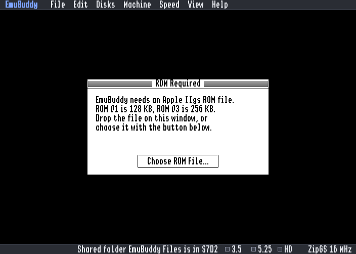
Two ROM files work. A ROM 03 file is 256 KB in size and is the usual choice. A ROM 01 file is 128 KB. The ROM of the very first Apple IIgs, ROM 0, does not work.
To give EmuBuddy the file, do one of these:
EmuBuddy remembers the file, so you do this once.
ROM03 or ROM01 in EmuBuddy’s data folder (Appendix B) is found without being chosen.The cleanest way to a ROM file is to read it out of an Apple IIgs you own. The ROM is also part of the apple2gs set for the MAME emulator. EmuBuddy needs it as one plain file, not a zip: if you have MAME’s two files 341-0737 and 341-0748, join them in that order into one file of 256 KB.
With a ROM and no disk, the IIgs does what a real one does with empty drives: it says Check startup device! That message is good news. The ROM works, and the IIgs is waiting for a disk to start up from.
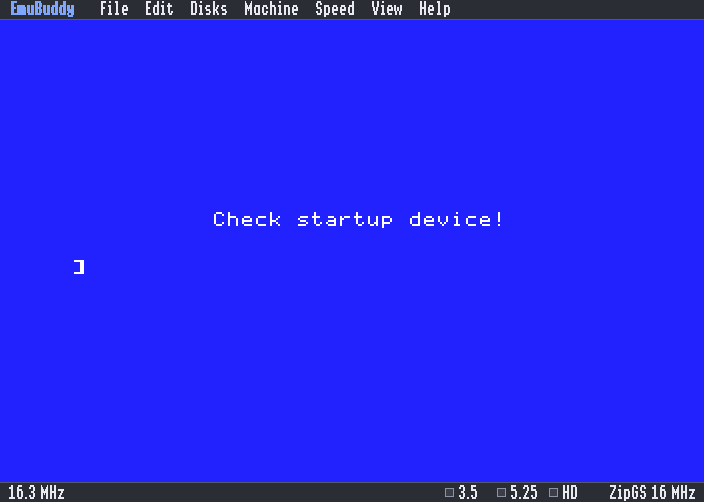
A disk image is a file that holds everything on one disk: a floppy disk or a whole hard disk. To start the IIgs:
EmuBuddy puts the disk in a drive that fits it, and the IIgs starts up from it. After a moment the Finder appears.
From now on EmuBuddy starts with the disks that were in its drives when you quit. Chapter 2 tells you everything else about disks and drives.
When EmuBuddy starts with a startup hard disk that it has not seen before, it asks whether it may install its helper on that disk. The helper lets you drop files from your computer on any Finder window in the IIgs. Chapter 3 describes it; if you are not sure, click Not Now, and EmuBuddy asks again the next time it starts.
The window has three parts.
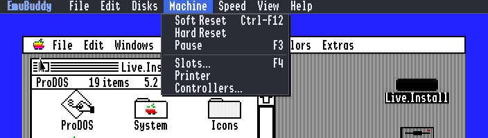
The Machine menu has what the switches and the Reset key of a real IIgs do:
| Soft Reset | Restarts the IIgs but keeps its memory, like Control-Reset on a real one. Control-F12 does the same. |
| Hard Reset | Clears the memory, loads the ROM again and starts up from the startup disk, like switching the IIgs off and on. |
| Pause | Stops the IIgs where it is until you choose Pause again. The status bar says PAUSED. F3 does the same. |
To leave EmuBuddy, choose Quit EmuBuddy from the File menu (on a Mac, from the EmuBuddy menu, or press Option-Command-Q).
Chapter 2
EmuBuddy’s IIgs has eleven drives. Each has a short name made of its slot and its number, which the Drives window and the status bar use:
| S5D1, S5D2 | Two 3.5-inch drives, for 800K disks |
| S6D1, S6D2 | Two 5.25-inch drives, for 140K disks |
| S7D1 to S7D7 | Seven hard disks on a SCSI card |
The drives take disk images of the usual kinds, among them .po, .hdv, .2mg, .dsk, .do and .woz files.
You can put a disk in a drive, and take it out, at any time while the IIgs is running. There are three ways:
The status bar tells you where the disk went.
Choose Drives Window from the Disks menu, or press F2.
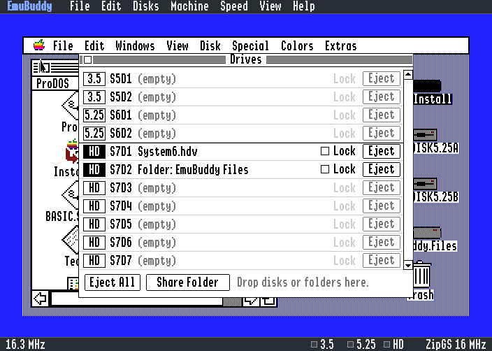
Each row is one drive, with the name of the disk in it.
| To put a disk in a drive | Click the row and pick the disk image, or drop the image on the row. |
| To take a disk out | Click Eject in its row. While the IIgs is reading or writing, EmuBuddy does not eject, so a disk is never pulled out in the middle of being written; the status bar says Drive is busy. Try again a moment later. |
| To protect a disk | Click its Lock box. The IIgs can then read the disk but not change it, like a floppy disk with its write-protect tab set. |
| To empty all drives | Click Eject All, or choose Eject All from the Disks menu. |
| To share a folder | Click Share Folder, or drop a folder on the window (Chapter 3). |
Some hard disk images hold several partitions, each a disk of its own. When you put such an image in a drive, EmuBuddy lists the partitions and asks which one you want.
The Disks menu keeps a list of the disks you used last, below its commands. Choose one to put it in a drive again.
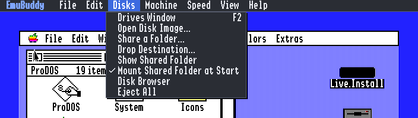
The IIgs starts up the way a real one does. Unless you changed the Startup Slot in its Control Panel, it looks at slot 7 first, then slot 6, then slot 5, and at the first drive of each: hard disk 1 (S7D1), then 5.25-inch drive 1 (S6D1), then 3.5-inch drive 1 (S5D1). So the hard disk you want to start up from belongs in S7D1.
When the IIgs is waiting for a startup disk, with Check startup device! or UNABLE TO LOAD PRODOS on its screen, EmuBuddy helps: a disk image you drop on the window goes into the first drive of its kind and the IIgs starts up from it at once.
EmuBuddy also looks through the other hard disks for you. A real IIgs tries hard disk 1 and no other. If the waiting IIgs has a startup disk in one of the hard disks 2 to 7, EmuBuddy takes the first one it finds, puts it into S7D1, where it swaps places with whatever was there, and starts the IIgs up from it. The status bar tells you so.
At any other time a new disk just appears on the IIgs desktop after a moment, hard disks included, and the IIgs keeps running. To start up from a different disk then, put it in the first drive of its kind and choose Hard Reset from the Machine menu.
Chapter 3
There are four ways to move files between the IIgs and the computer it runs on. The first two are all most people need.
The first time it starts, EmuBuddy makes a folder named EmuBuddy Files in your Documents folder and gives it to the IIgs as a disk. On the IIgs desktop it is the disk EmuBuddy.Files.
The folder and the disk are the same thing seen from two sides:
| To open the folder on your computer | Choose Show Shared Folder from the Disks menu. |
| To share another folder | Choose Share a Folder from the Disks menu and pick it, or drop the folder on the EmuBuddy window. It becomes one more disk. |
| To stop sharing a folder | Eject it in the Drives window. |
| To start without the shared folder | Choose Mount Shared Folder at Start from the Disks menu, so that its check mark goes away. |
To the IIgs a shared folder is a ProDOS disk, and that sets two limits. It can hold up to 32 MB. And file names on a ProDOS disk are short: up to 15 letters, digits and periods, beginning with a letter. A file with another kind of name on your computer appears in the IIgs under a name changed to fit.
Drop any file from your computer on the EmuBuddy window, and EmuBuddy copies it to the IIgs. Where it lands depends on what the Finder in the IIgs is showing:
Disk images are the exception: a disk image you drop is put in a drive, not copied. ShrinkIt archives (.shk files) are files like any other, and are copied.
The helper is a small program that EmuBuddy can put on your startup disk. It runs in the background in the IIgs and copies dropped files into Finder windows that show other disks than the shared one. EmuBuddy asks before it installs the helper: Install puts it on the disk and restarts the IIgs, Not Now leaves the question for another time, and Never ends the asking.
The helper is one file, EMUBUDDYHELPER, in the SYSTEM/SYSTEM.SETUP folder of the startup disk. To be rid of it, drag it to the Trash in the IIgs.
Choose Drop Destination from the Disks menu to say where dropped files go when the Finder does not decide it.
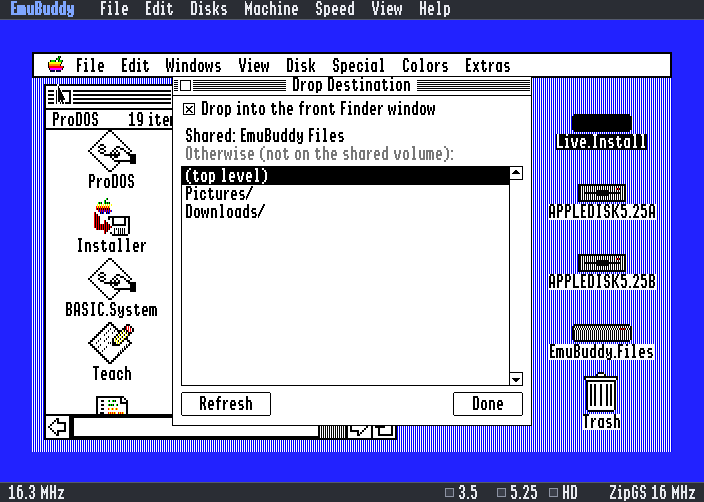
The list shows the folders in the shared folder; (top level) is the shared folder itself. Click the folder you want. Click Refresh after you have made new folders. To have every dropped file go to that folder, whatever the Finder shows, click the box Drop into the front Finder window so that it is empty. Click Done to put the window away.
The Disk Browser shows what is on a ProDOS disk image and copies files out of it, without the IIgs. Choose Disk Browser from the Disks menu. Then click Open Image and pick a disk image, or drop one on the window. It may be an image that is in a drive.
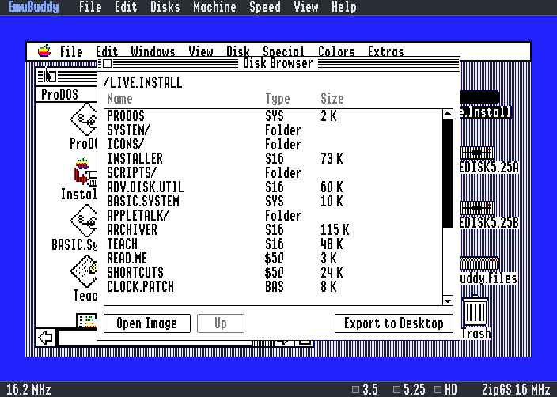
The list shows each file and folder with its type and size. Double-click a folder to open it; click Up to go back. To copy a file to your computer, click it, then click Export to Desktop. On a Mac you can also drag a file out of the list into a Finder window.
Every file on a ProDOS disk has a file type and an aux type, two numbers that tell the IIgs what the file is. The folders of your computer have no place for them, so EmuBuddy keeps them in the name of the file:
GAME,t$B3,a$DB03 | A file of type $B3 with aux type $DB03 |
NOTES.txt | A text file |
DATA | A name with neither is a binary file |
The IIgs does not see the additions: the first file is GAME to it, a file of type $B3, and the second is NOTES, a text file. Files that have a resource fork are kept as AppleSingle files (.applesingle). The same rule holds in the shared folder, for the Disk Browser and for the bridge folder, so a file can go to your computer and come back without losing what it is.
The fourth way is for programs. A program in the IIgs that knows EmuBuddy’s host bridge, a file manager for example, can read and write one folder of your computer directly. Nothing outside that folder can be reached, and the bridge is off until you name the folder: with -bridge on the command line (Chapter 10), or as the Bridge folder of a game in EmuBuddy Launcher (Chapter 9). Programmers find the details in the file docs/BRIDGE.md of EmuBuddy’s source code.
Chapter 4
An Apple IIgs has two ports, for a printer and a modem, and seven slots for cards. In EmuBuddy you plug cards in with a click.
Choose Slots from the Machine menu, or press F4. The window has a row for each slot. Click what you want in each row. Nothing changes until you click Apply; Revert puts the window back to what is plugged in now.
| Slot 1, the printer port | Idle, a modem, an ImageWriter printer or a PostScript printer (Chapter 6) |
| Slot 2, the modem port | Idle, or a modem that dials Internet addresses in place of phone numbers, for terminal programs |
| Either port | AppleTalk, when the IIgs itself is set to use the port for it. You do not choose that here (Chapter 5). |
| Slot 3 | Empty, a Video Overlay Card or an Uthernet II network card |
| Slot 4 | Empty, a Mockingboard sound card or an Uthernet II network card (Chapter 5) |
| Slots 5 and 6 | The built-in 3.5-inch and 5.25-inch drives |
| Slot 7 | Empty, or the SCSI card with its seven hard disks |
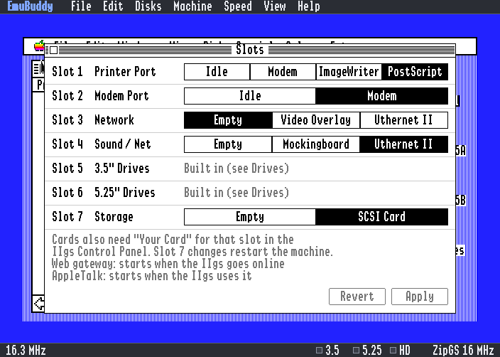
EmuBuddy starts with a PostScript printer on the printer port, a modem on the modem port, the Uthernet II in slot 4 and the SCSI card in slot 7: what printing, the Internet and hard disks need.
On a real Apple IIgs, plugging a card in is half of the job. Each slot has a setting in the Control Panel of the IIgs: either the port built into the IIgs for that slot, or Your Card. A program that looks for a card by its slot finds it only when the slot says Your Card.
EmuBuddy’s IIgs comes with slot 7 set to Your Card, so hard disks work at once, and the network card in slot 4 works with Marinetti as it comes. If a program does not find a card, this setting is the first thing to check:
The printer and the modem are on the built-in ports of the IIgs and never need this.
EmuBuddy’s IIgs has a memory expansion card of 8 MB, the largest a real IIgs takes. To try a program with less, set the memory on the command line (Chapter 10) or in a game of EmuBuddy Launcher (Chapter 9).
Chapter 5
The Uthernet II is a network card for the Apple II. EmuBuddy has one in slot 4, and it supplies the other end of the cable as well: a small network of its own that connects the IIgs to the Internet through your computer. You do not install or set up anything on your computer for it.
On the IIgs you need Marinetti, the TCP/IP software that Apple IIgs network programs use, with its Uthernet II link layer. Both are free and belong on your startup disk.
The status bar counts the packets: Net out for those the IIgs sent, in for those it received. When the numbers move, the network works.
If a program wants the numbers typed in, these are they:
| Address of the IIgs | 192.168.64.2 (DHCP gives out addresses from this one on) |
| Subnet mask | 255.255.255.0 |
| Gateway (router) | 192.168.64.1 |
| Name server (DNS) | 192.168.64.1 |
| Your own computer | 192.168.64.254 |
From the IIgs, your own computer always has the address 192.168.64.254, whatever address it has in your home network. A web server you run on your computer, for example, is http://192.168.64.254/ in a browser on the IIgs. Other computers in your home network are reached by their usual addresses.
Browsers for the Apple IIgs, such as Webber, were written for the web of their time. They cannot open the secure (HTTPS) sites that nearly every site is today, and the pages are too big and too full of scripts for them. EmuBuddy’s web gateway stands between the browser and the web. It fetches the page for the IIgs, from secure sites too, takes out the scripts, the styles and everything else an old browser cannot use, and hands over a small, plain page.
The gateway starts by itself when the IIgs goes online. To use it, tell the browser to use it as its proxy:
| Proxy address | 192.168.64.254 |
| Proxy port | 6502 |
In Webber, choose Settings from the File menu, click Enable Proxy so that it is checked, click Proxy Settings and type the address and the port.
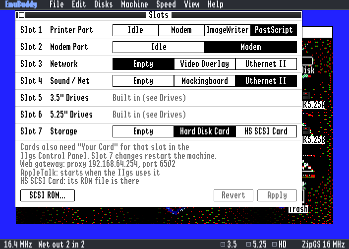
The line Web gateway in the Slots window tells you how the gateway is doing. Web gateway: starts when the IIgs goes online means it is waiting for the IIgs to connect. Web gateway: proxy 192.168.64.254, port 6502 means it is running. If it could not start, the line says why.
-webgate in Chapter 10.The Internet is not the only network an Apple IIgs knows. Its own, older one is AppleTalk: the network of AppleShare file servers and LaserWriters, and of starting up from a server with no disk in the drive. A real IIgs does AppleTalk through a LocalTalk cable on its printer port or its modem port. From version 1.1, EmuBuddy gives the port that cable.
You switch AppleTalk on in the IIgs, as on a real one. EmuBuddy needs no setting.
The startup disk needs the AppleTalk software of System 6, which Apple’s Installer adds with its AppleShare script. With it, the IIgs asks for your user name each time it starts up.
When the IIgs starts AppleTalk, the status bar says AppleTalk on the modem port, and the last line of the Slots window shows how it is doing: the port, the node number the IIgs took, and how many other nodes it has heard.
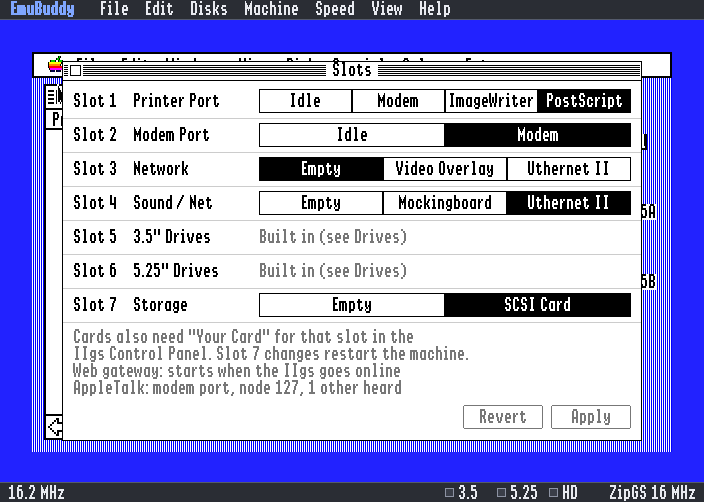
EmuBuddy carries the LocalTalk cable through your local network, in a form called LocalTalk over UDP. Several programs speak it, among them the Macintosh emulator Mini vMac and the AppleTalk routers TashRouter and MultiTalk. A IIgs in EmuBuddy and every such program in your home network are on one LocalTalk network together, on the same computer or on different ones.
File servers and real Macintosh computers are usually on Ethernet, on the kind of AppleTalk called EtherTalk. To reach them, the two networks must be joined by an AppleTalk router that speaks both, such as TashRouter, running on any computer in your network.
A IIgs can start up from an AppleShare server that offers it. On the Slots page of the Control Panel of the IIgs, set StartUp to AppleTalk as well. With no disk, the IIgs then looks for a startup server on the network until it finds one.
To have EmuBuddy leave AppleTalk alone, see -appletalk in Chapter 10.
Chapter 6
EmuBuddy has two printers for the IIgs. Neither uses paper until you say so: every page the IIgs prints appears in the Printer window, and from there you save it as a PDF file or send it to a real printer.
Open the Slots window (Chapter 4) and choose ImageWriter or PostScript for slot 1, the printer port. Then tell the IIgs which printer it has:
The ImageWriter II is the dot matrix printer that nearly all Apple II software can print on. In System 6, choose the ImageWriter driver and the printer port in the DC Printer control panel. Programs that print without GS/OS, Applesoft BASIC with PR#1 for example, print on it as well.
The PostScript printer gives the sharpest pages. In the DC Printer control panel of System 6, choose the printer port and the printer type DC.PostScript.
PostScript pages are drawn by Ghostscript, a free program that EmuBuddy looks for on your computer. If it is missing, the window Ghostscript Needed tells you so. Your print job waits: install Ghostscript, then click Try Again.
| Mac | With Homebrew: brew install ghostscript |
| Windows | The installer from ghostscript.com |
| Linux | sudo apt install ghostscript, or your system’s own package manager |
Print from a program in the IIgs as you would on a real one. The status bar says Printed page 1. To see the page, choose Printer from the Machine menu.

The arrows below the page go to the page before and the page after. The buttons along the bottom do this:
| Save PDF | Saves all the pages as one PDF file on your Desktop, named EmuBuddy Print with the date and time. |
| Sends the pages to the default printer of your computer. On Windows it opens the PDF file, and you print from there. | |
| Open | Opens the pages as a PDF file in your computer’s PDF viewer. |
| Clear | Throws the pages away. |
| Eject | Finishes the page that is being printed. An ImageWriter page stays in the printer until it is full or the program ejects it; click Eject to have it now. |
When all the pages came from the PostScript printer, Save PDF writes a small PDF with sharp text at any size. ImageWriter pages are saved as pictures of the pages.
Chapter 7
A real Apple IIgs runs at 2.8 MHz, or at 1 MHz for old Apple II programs that count on it. Many had a ZipGS accelerator card to make them faster. EmuBuddy’s Speed menu has them all, and you can change the speed at any moment.
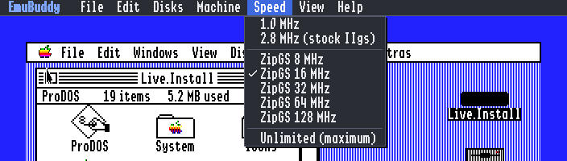
| 1.0 MHz | The speed of an Apple IIe, for old games that run too fast otherwise |
| 2.8 MHz | The speed of a IIgs without an accelerator |
| ZipGS 8 to 128 MHz | A IIgs with a ZipGS accelerator. 16 MHz makes the Finder pleasant. |
| Unlimited | As fast as your computer can go |
The right end of the status bar shows the speed you chose, the left end the speed the IIgs really reaches.
The View menu has four window sizes, from 1x, where one dot of the IIgs is one dot of your screen, to 4x. Sizes that do not fit on your screen are gray. Your choice is remembered. The picture is always enlarged evenly, so it is never stretched.
| Full Screen | Fills the screen with the IIgs. F11 switches it on and off. |
| CRT Effect | Curves the picture like the glass of a monitor. Control-F11 |
| Scanlines | Draws the dark lines between the rows of a monitor’s picture. Shift-F11 |
The File menu takes pictures of what you see:
| Save Screenshot | Saves the IIgs screen as a picture on your Desktop. F10 |
| Save Window Screenshot | Saves the whole EmuBuddy window, with its menu bar, status bar and windows. Shift-F10 |
The pictures are PNG files named EmuBuddy, with the date and the time.
Choose Record Video from the File menu, or press Control-F10, to record what the IIgs shows and plays. The status bar says REC and counts the time. Choose Record Video again to stop. The recording is an MP4 file with sound, named EmuBuddy Recording with the date and time, in the Movies folder of your computer (Videos on Windows and Linux). If you quit while recording, the file is saved first.
Recording needs FFmpeg, a free program. If EmuBuddy does not find it, a window tells you how to get it:
| Mac | With Homebrew: brew install ffmpeg |
| Windows | winget install ffmpeg |
| Linux | sudo apt install ffmpeg, or your system’s own package manager |
Chapter 8
Your keyboard is the keyboard of the IIgs. A few keys of an Apple IIgs keyboard are not on every keyboard of today, so EmuBuddy gives them a place:
| Open-Apple | F1 on every keyboard. Also the Command key of a Mac keyboard and the Windows key of a PC keyboard. |
| Option | Option on a Mac keyboard, Alt on a PC keyboard |
| Reset | F12. With Control it is Control-Reset, the soft reset. |
Hold F1 the way you would hold the Open-Apple key: F1-Q is Open-Apple-Q, which quits most IIgs programs.
On a Mac, the Command key shortcuts you know belong to the IIgs while EmuBuddy is in front: Command-Q quits the program in the IIgs, not EmuBuddy. EmuBuddy itself quits with Option-Command-Q.
The function keys work EmuBuddy:
| F1 | The Open-Apple key |
| F2 | The Drives window |
| F3 | Pause |
| F4 | The Slots window |
| F10 | Save Screenshot |
| Shift-F10 | Save Window Screenshot |
| Control-F10 | Record Video, start and stop |
| F11 | Full Screen |
| Shift-F11 | Scanlines |
| Control-F11 | CRT Effect |
| Control-F12 | Soft Reset |
EmuBuddy gives the IIgs the character your key makes, not the place of the key. A German, French or Spanish keyboard therefore types what is printed on its keys, whatever keyboard layout is set in the Control Panel of the IIgs.
Letters with umlauts and accents work as well. In the desktop programs of GS/OS, EmuBuddy types them the way a Mac does, and the IIgs shows the real letter. On the text screens they become the national characters of the IIgs, which show as umlauts and accents when the Control Panel is set to that country’s character set.
The Edit menu connects the clipboard of your computer with the IIgs:
| Paste Text | Types the text on your computer’s clipboard into the IIgs, as if you typed it. Use it for a long web address, or for a BASIC program you copied from a web page. |
| Copy Screen Text | Copies what is on a text screen of the IIgs to your computer’s clipboard. |
A game controller connected to your computer is the joystick of the IIgs. Without one, the keys of the numeric keypad move the joystick.
Chapter 9
EmuBuddy Launcher is the second program in the download. It keeps your games on a shelf, each with its picture, and starts EmuBuddy with the one you pick. You can work it from the sofa with a game controller.
The Launcher calls each thing on its shelf a game, but a game can be anything you run: a word processor, your System 6 hard disk, a demo. A game is a whole set-up of the IIgs: the ROM, the memory, the speed, the card in each slot, the disks in the drives, the shared folder and the size of the window. When you start a game, EmuBuddy opens with exactly that set-up, and your everyday set-up in EmuBuddy stays as it was.
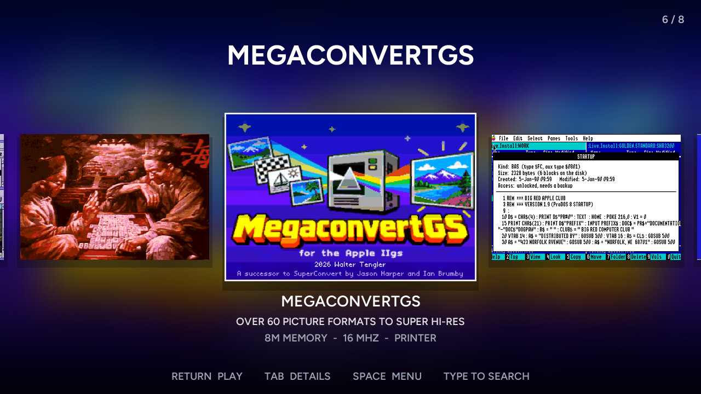
The games stand in a row as big covers, over a soft picture of the one that is selected. Its name, a line about it and its set-up are below it.
| ← → | Move along the row |
| Return | Start the game |
| Tab | Show the details of the game |
| Space | Open the menu |
| Letters | Type to search for a game by its name |
| Esc | Go back |
The mouse works too: click a cover to select it, double-click it to start it, and turn the wheel to move along the row.
| D-pad or left stick | Move along the row |
| A | Start the game |
| B | Go back |
| X | Show the details |
| Y or Start | Open the menu |
| Shoulder buttons | Jump five games |
The hints at the bottom of the screen change to the buttons of the controller as soon as you use it. In the Launcher’s windows the D-pad moves a frame from one item to the next, A presses what is in the frame, and B closes the window. Typing a name needs a keyboard.
Press Space for the menu. Everything the Launcher can do is in it.
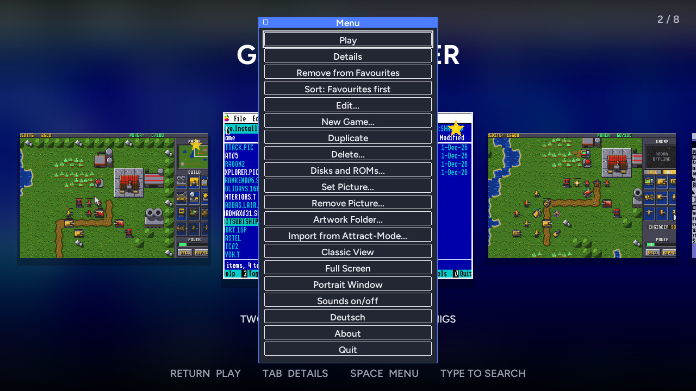
Choose New Game from the menu, or Edit to change the selected game. A small window asks for what most games need.
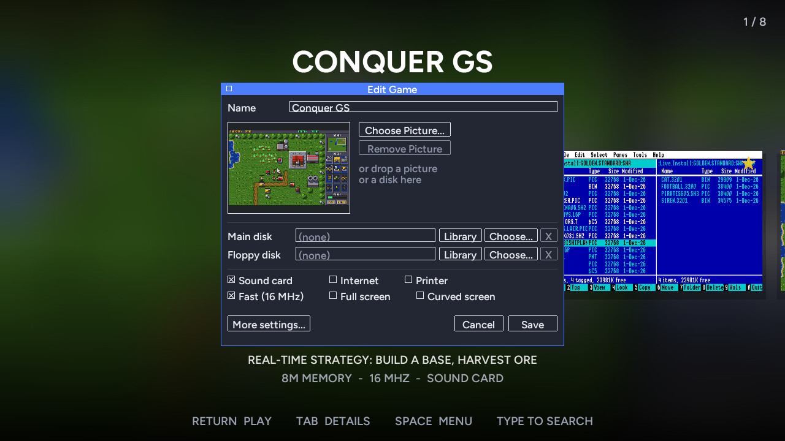
| Name | What the game is called on the shelf |
| Picture | Click Choose Picture, or drop a picture on the window. |
| Main disk | The hard disk image the game starts from. Click Choose to pick a file, or Library to pick from your disks (see “Disks and ROMs”). You can also drop the disk on the window. |
| Floppy disk | A floppy disk image, if the game comes on one |
| The boxes | Sound card, Internet and Printer plug in the Mockingboard, the Uthernet II and a printer. Fast runs the game at 16 MHz. Full screen and Curved screen set the display. |
Click Save. For everything else, click More settings: the ROM file, the memory, any speed, the card in each slot, all eleven drives, the shared folder, the bridge folder and the size of the window.
Duplicate in the menu makes a copy of the selected game, which is the quickest way to a second set-up that differs in one thing. Delete removes a game from the shelf; its disks stay where they are.
Each game shows a cover. The Launcher takes it from the first of these that it finds:
boxart, flyer, snap, video and, for the logo, wheel, the names Attract-Mode uses.Add to Favourites in the menu puts a star on the selected game; Command-D on a Mac, Control-D elsewhere, does the same. The Sort command in the menu steps through the orders of the shelf: by name, favourites first, last played and most played. The Launcher counts for itself how often and when you played each game.
Disks and ROMs in the menu is a library of your disk images and ROM files. Name the folders where you keep them, and the Launcher lists what it finds there, each disk with its kind and the name of its ProDOS volume, and tells you which games use it. It can also look for copies of the same disk and for damaged images.
A game can use a private copy of a disk. The game then changes its own copy, and the original stays as it is: useful for games that write their high scores or saved positions to the disk.
If you have used the Attract-Mode front end with an Apple IIgs emulator, choose Import from Attract-Mode in the menu. The Launcher reads your Attract-Mode folder, makes a game of every entry in a system’s list, and takes over the options of its start script and its artwork folders. Your Attract-Mode folder is not changed.
| Classic View | Shows the games in windows with menus, like a desktop, in a choice of skins from Retro and Modern to Apple II, Commodore 64 and Cover Flow. In the Classic view, the View menu has the window sizes and the skins. |
| Full Screen | Fills the screen. F11 does the same. |
| Portrait Window | Opens an upright window: a big picture on top, the row of covers below. On a screen that is turned upright, the Launcher does this by itself. |
| Sounds on/off | Switches the soft sounds of the Launcher off and on. |
| Deutsch | Switches between English and German. On a German system the Launcher starts in German. |
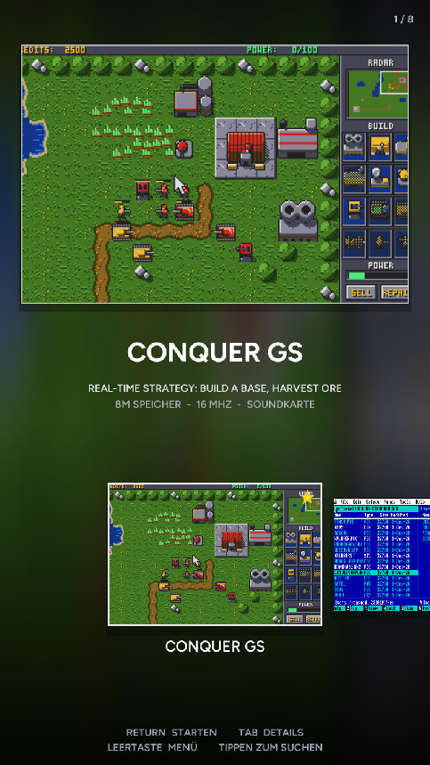
Chapter 10
Everything in EmuBuddy’s menus can also be set when you start it from a terminal or a script. You never need this to use EmuBuddy. It is there for shortcuts, scripts and other front ends, and its options follow the ones of the MAME emulator’s apple2gs, so start scripts written for MAME need little change.
EmuBuddy [apple2gs] [options] [disk image or folder ...]
On a Mac the program is inside the application: /Applications/EmuBuddy.app/Contents/MacOS/EmuBuddy.
The options hold for that one start. Nothing of them is saved, so your everyday set-up stays as it was, unless you add -save. An example:
EmuBuddy apple2gs -rom ROM03 -hard1 System6.hdv -flop3 Game.2mg -sl1 imagewriter -sl4 uthernet2 -mhz 16 -scale 2 -share ~/IIgsFiles
-flop1, -flop2 image | The 5.25-inch drives, S6D1 and S6D2 |
-flop3, -flop4 image | The 3.5-inch drives, S5D1 and S5D2 |
-hard1 to -hard7 image | The hard disks, S7D1 to S7D7 |
-share folder | A folder of your computer as a shared disk |
| image or folder | Without an option before it, a disk goes into the first free drive that fits. |
-sl1 card | imagewriter, postscript, modem or none |
-sl2 card | modem, imagewriter, postscript or none |
-sl3 card | uthernet2, voc (the Video Overlay Card) or none |
-sl4 card | mockingboard, uthernet2 or none |
-sl7 card | scsi or none |
-rom file | The ROM file |
-rompath folder | A folder to look for the ROM file in |
-ramsize nM | The memory expansion, from 0M to 8M |
-mhz n | The speed: 1, 2.8, 8, 16, 32, 64, 128 or max |
-nothrottle | As fast as possible, the same as -mhz max |
-window, -nowindow | In a window, or full screen |
-scale n | The window size, 1 to 4 times the IIgs screen. It is made smaller if it does not fit your screen. |
-resolution wxh | The window size in dots, for example 1408x1136 |
-crt | The CRT effect |
-scanlines n | Scanlines, from 0 (none) to 100 (strongest) |
-title text | The title of the window |
-bridge folder | The bridge folder (Chapter 3) |
-webgate port | Another port for the web gateway than 6502; -webgate off switches the gateway off. |
-appletalk on or off | AppleTalk for a IIgs that is set to use it (Chapter 5). It is on unless you switch it off. |
-quitshot file.png | Saves a picture of the IIgs screen in this file when EmuBuddy quits. |
-validate | Checks that the ROM, disks and folders you named exist, says so, and stops. |
-showconfig | Shows the set-up your options stand for, and stops. |
-save | Saves these options as your everyday set-up. |
-cfg file | Uses another settings file. |
-help | Lists the options. |
EmuBuddy ends with the code 0 when all went well, 1 when something went wrong while it ran or -validate found something missing, and 2 when it did not understand the command line.
Appendix A
| macOS says EmuBuddy is damaged or cannot be opened | The download is still marked by macOS. Type the xattr line in “Installing EmuBuddy” in Chapter 1. |
Windows says a .dll file is missing | The program was moved away from its files. Unpack the whole .zip file again and leave everything together. |
| The ROM Required window stays | The file you chose is not a ROM 01 (128 KB) or ROM 03 (256 KB) file. A zip file must be unpacked first. |
| Check startup device! | The ROM works, but no drive holds a startup disk. Drop a startup disk image on the window. |
| UNABLE TO LOAD PRODOS | The disk in hard disk 1 is not a startup disk, and none of the other hard disks holds one. Drop a startup disk image on the window; EmuBuddy puts it in S7D1 and starts up from it. |
| The IIgs starts up from the wrong disk | Put the disk you want in S7D1 in the Drives window, then choose Hard Reset from the Machine menu. |
| A hard disk image does not appear on the desktop | Give it a few seconds. If all seven hard disk drives are full, EmuBuddy does not take it: eject one in the Drives window first. A volume with the same name as one already on the desktop is not shown twice. |
| A disk does not eject | The IIgs is reading or writing. Wait until the drive lights in the status bar are dark, then click Eject again. |
| The IIgs cannot change a disk | Its Lock box is checked in the Drives window, or the image file is protected on your computer. |
| A folder cannot be shared | It holds more than 32 MB. Share a smaller folder. |
| A dropped file does not show up | Give the IIgs a moment, then look in the EmuBuddy.Files disk, in the folder set as the Drop Destination. A name the IIgs cannot use is changed to one it can. |
| The IIgs does not see a card | Set its slot to Your Card in the Control Panel of the IIgs and restart the IIgs (Chapter 4). |
| The network does not connect | Check that the Uthernet II is plugged in, in the Slots window, and that Marinetti uses the Uthernet II link layer with the same slot. If it still does not connect, set that slot to Your Card (Chapter 4). |
| The browser cannot open a site | Set the web gateway as its proxy (Chapter 5). The Web gateway line of the Slots window tells you whether the gateway is running; it needs Python 3. |
| A web page comes out empty | The page is put together by scripts, which the gateway removes. Try the site’s plain or mobile version, if it has one. |
| AppleTalk finds nothing | Check the last line of the Slots window. If it still says starts when the IIgs uses it, set Slot 1 or Slot 2 to AppleTalk in the Control Panel of the IIgs, and make sure its startup disk has the AppleTalk software. On a Mac, allow EmuBuddy under Privacy & Security, Local Network. To reach servers on Ethernet you need an AppleTalk router (Chapter 5). |
| The printer or the modem stopped working | The IIgs is using that port for AppleTalk. Set its slot back to the printer or modem port in the Control Panel of the IIgs and restart the IIgs. |
| Nothing is printed | Check that the printer in slot 1 of the Slots window matches the printer chosen in the IIgs. For the PostScript printer, Ghostscript must be installed (Chapter 6). |
| Half a page is missing | The page is still in the ImageWriter. Click Eject in the Printer window. |
| An Open-Apple key combination does something on your computer instead | Your system keeps that combination for itself. Use F1 as the Open-Apple key. |
| A game runs much too fast | Choose 2.8 MHz from the Speed menu, or 1.0 MHz for an old Apple II game. |
| A window size is gray | The window would not fit on your screen at that size. |
| Record Video does nothing | FFmpeg is not installed (Chapter 7). |
Appendix B
| The shared folder | EmuBuddy Files, in your Documents folder |
| Screenshots | On your Desktop: EmuBuddy, with the date and time |
| Printed pages | On your Desktop: EmuBuddy Print, with the date and time |
| Video recordings | In your Movies or Videos folder: EmuBuddy Recording, with the date and time |
EmuBuddy and EmuBuddy Launcher keep their own files in one folder, named EmuBuddy:
| Mac | ~/Library/Application Support/EmuBuddy |
| Windows | %APPDATA%\EmuBuddy |
| Linux | ~/.local/share/EmuBuddy |
In it are:
ROM03 or ROM01 | A ROM file you put here under one of these names is found by EmuBuddy and by every game of the Launcher, without being chosen. |
Profiles | The games of EmuBuddy Launcher, one small text file for each, and what belongs to them |
Gateway | The web gateway and its log, gsgate-6502.log |
EmuBuddy | The list of the disks you used last, and files EmuBuddy needs for a moment while it prints or records |
EmuBuddy keeps your everyday set-up, the disks in the drives, the cards in the slots, the speed and the window, in a text file named emubuddy.config. It looks for the file in the folder it was started from, then in your home folder, then beside the program, and makes a new one in the first of these places where it may write. You do not need to open the file: everything in it is set from the menus. To start EmuBuddy as new, quit it and move the file away.